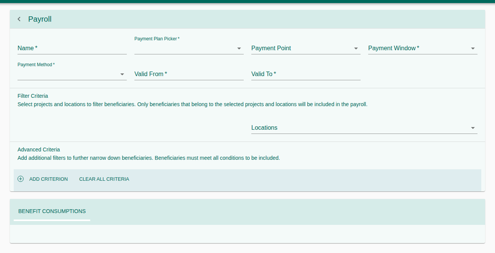
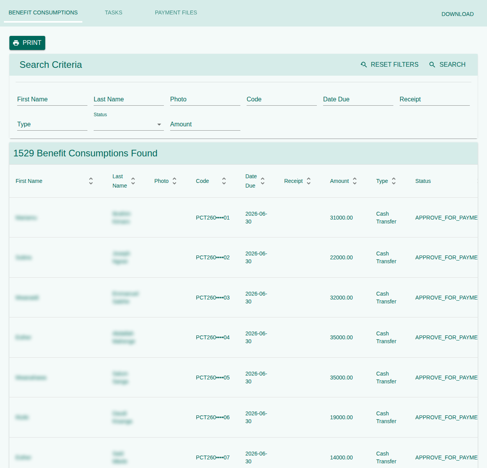

How a payroll is created for a payment cycle, calculated, approved and handed to TASAF Payments. A payroll takes the enrolled households of a benefit plan and location, and the PCT rule works out each household's benefit. Once approved, it is paid through TASAF Payments.
1. Purpose, Roles, and Access
| Role | Typical work |
|---|---|
| Payroll officer | Create payrolls and review their benefits. |
| Payroll approver | Approve or reject payrolls from the Tasks inbox. |
| Finance / audit | Read payrolls and their benefits. |
| Right | Grants |
|---|---|
202001 / 202002 / 202004 | Search / create / delete payrolls. |
201001–201004 | Payment points. |
206001 / 206002 | See / upload reconciliation files. |
2. Menus and Pages
| Menu | Shows |
|---|---|
| Payrolls | Every payroll; create a new one with +. |
| Pending Payrolls | Waiting for approval. |
| Approved Payrolls | Approved for payment. |
| Reconciled Payrolls | Paid and closed. |
| Payment Points | Where payments are made. |
| Tasks | Approve Payroll Tasks, Payroll Reconciliation Tasks, Rejected Payrolls, Delete Payroll Tasks. |
3. Create a Payroll
- Open Payrolls and press +.
- Enter the Name and choose the Payment Plan (it sets the benefit plan and the PCT calculation), the Payment Point, the Payment Cycle (e.g. Sep – Oct 2026) and the Payment Method.
- Set Valid From and Valid To.
- Under Filter Criteria, choose the locations. Only beneficiaries of the selected plan and locations are included. Advanced Criteria narrow it further; a beneficiary must meet all of them.
- Press Save. The benefits are calculated in the background, and the payroll becomes Pending Approval with an approval task.


4. Review the Benefits
Open the payroll. The Benefit Consumptions tab lists one line per beneficiary with its code, individual, amount, date due and status; filter it by name, status or amount. The Tasks tab shows the payroll's approval task, and Payment Files any files attached.


5. Approve or Reject
- Open Tasks → Approve Payroll Tasks (or the payroll's Tasks tab).
- Open the task, check the number of beneficiaries and the total.
- Approve, or reject with a reason. A rejected payroll appears under Rejected Payrolls.
The person who created the payroll cannot approve it.
6. After Approval
An approved payroll is Approve for payment and appears under Approved Payrolls. It is paid through TASAF Payments:
- Pre-Audit checks the payment window's accounts, amounts and duplicates.
- Disbursement generates the Bank and MNO paylists from the payroll.
- The paylists are approved twice and submitted to MUSE; MUSE's replies mark each benefit paid or unapplied.
Do not use Make Payment or upload reconciliation files for TASAF payrolls: payment and reconciliation come from MUSE.
7. Statuses
| Payroll | Meaning |
|---|---|
| Pending approval | Calculated, waiting for the approver |
| Approve for payment | Can be pre-audited and paid |
| Rejected | Will not be paid; its households can go into a new payroll |
| Reconciled | Paid and closed |
| Benefit | Meaning |
|---|---|
| Accepted / Created | Calculated |
| Approve for payment | On an approved payroll |
| Duplicate | The household already has a benefit in this cycle |
| Rejected | Will not be paid |
| Reconciled | Paid |
8. Troubleshooting
| Problem | What to do |
|---|---|
| The payroll has fewer beneficiaries than expected | Check the locations and criteria, and that the households are enrolled (active) in the benefit plan. |
| The payroll is not in TASAF Payments → Disbursement | It must be approved for payment first. |
| Benefits marked Duplicate | Another payroll of the same cycle already includes those households. |